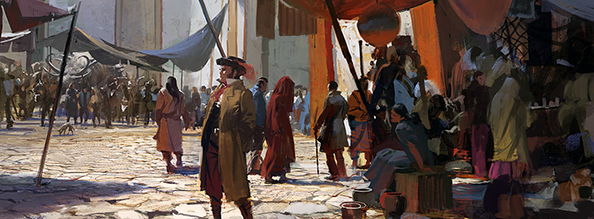

Le commerce dans les RPG
L’un des éléments les plus importants du RPG, bien qu'on n'y pense pas tout de suite, c'est le commerce. En effet, qui dit jeu de rôle dit achat et vente d’équipement et de matériel divers (épées, potions, amulettes, etc.) et donc, commerce. L’article qui va suivre vise à développer une réflexion sur quelques aspects du commerce dans les RPG, son influence et la façon de l’implémenter, de façon à immerger le joueur dans l’univers sans que cela devienne un fardeau pour lui.

I. Les différents aspects du commerce
1. Aspect culturel
Le commerce intervient de différentes façons dans l’univers d’un RPG. En premier lieu, c'est un élément de background. Le commerce est un indicateur de développement économique, qui permet de distinguer un petit village dans une forêt coupée du reste du monde et une gigantesque ville portuaire au carrefour des civilisations : il est tout naturel de trouver des magasins plus nombreux et mieux achalandés dans les grandes villes que dans les petites.
Les objets vendus sont aussi des éléments de background. En jouant sur les objets produits uniquement dans certaines régions, on peut modifier l'ambiance d'une ville : par exemple, telle ville sera la seule à proposer la viande d'un animal qui n'est élevé que dans cette région. Les produits locaux donnent un certain exotisme à la ville visitée, ils lui donnent un côté « typique ». A l'inverse, une ville qui importe des produits dans le monde sera sans doute un carrefour commercial, un port par exemple. Ceci va de pair avec la façon dont sont répartis les savoir-faire : telle arme a été forgée à l’aide d’une technologie maîtrisée uniquement par les forgerons d’une certaine région.
Les marchands, enfin, sont aussi des éléments de background. Leur design doit coller avec leurs origines et si possible avec les produits qu’ils vendent. Ils peuvent donner un caractère rassurant ou inquiétant à un lieu selon leur caractère et ils peuvent constituer des personnages à part entière, comiques très souvent.
2. La monnaie
Les échanges commerciaux dans les RPG se font le plus souvent par le biais d'une monnaie. La plupart des jeux se contente d'un seul type de devises — souvent des pièces d'or — universel et la plupart du temps sans intérêt.
Les développeurs de Chrono Trigger ont proposé une solution intéressante à ce problème : à la préhistoire, la monnaie utilisée dans les autres époques — les pièces d'or — est remplacée par des objets apparemment sans valeur — plumes, crocs, os, etc. — que le joueur peut échanger contre d’autres objets. Ceci permet d’éviter que le joueur ne « sorte » du jeu : imaginez-vous en train de payer des hommes préhistoriques avec des pièces d’or frappées à l’effigie d’un monarque ou d’un monument. Vous vous diriez immédiatement que les développeurs n’y ont pas pensé, que ce n’est pas crédible.
On peut aussi citer la série des Zelda, qui utilise des cristaux de différentes couleurs appelés Rubis. D'une part, ceci permet de particulariser l'univers et lui donner une touche qui le rend un peu plus unique. D'autre part, ce système de couleurs permet d'éviter d'utiliser des chiffres et permet donc une immersion plus efficace.
Intéressons maintenant au cas d'Odin Sphere. Le joueur doit jongler entre pas moins de cinq monnaies différentes. Celles-ci ont des designs, des histoires et des valeurs différentes et elles sont mêmes intégrées au scénario. Elles constituent donc une forte plus-value pour l'univers. Mais elles ont aussi une importance véritable dans le gameplay. Les marchands ne feront pas l’effort de vous rendre la monnaie lors de vos achats, c’est donc à vous de faire l’appoint, d’où l’intérêt d’avoir la bonne pièce sur soi. De plus, l'acquisition d'expérience se fait par la cuisine dans Odin Sphere et chaque recette proposée possède son addition propre : si vous voulez préparer un plat, il vous faudra un certain type de monnaie, même si vous avez la somme équivalente avec d’autres pièces. Le joueur doit réfléchir un peu plus qu'à l'accoutumée quand il s'agit de ses achats : puis-je me permettre de m’acheter cet objet avec mes pièces ou ferais-je mieux de les économiser en vue de réaliser une recette très particulière ?
Une autre possibilité pour donner un rôle à la monnaie est la mise en place de taux de changes. Secret of Evermore proposait cette possibilité en permettant au joueur de changer sa monnaie des époques précédentes contre de la monnaie nouvelle, malheureusement à des taux de change lamentables. On aurait pu imaginer, pour pallier ce défaut, l’existence de PNJ bien cachés rachetant au prix fort votre ancienne monnaie ou un moyen de la transformer pour augmenter sa valeur, ce qui aurait pu donner lieu à des quêtes annexes.
Une dernière possibilité est de limiter la quantité de monnaie qu'il est possible de transporter, comme avec le système de bourses utilisé dans les Zelda. Notez que ceci est plus facile à mettre en œuvre dans un jeu où les quantités d’argent mises en jeu sont relativement petites, typiquement dans les A-RPG.
3. Les commerces spéciaux
Il existe aussi d'autres types de commerces qui ne font pas intervenir la monnaie. L'exemple le plus simple est celui du troc, qui permet une approche plus intéressante que l'achat simple : pour obtenir un objet convoité, le joueur devra aller chercher une monnaie d’échange très précise, ce qui peut donner lieu à de nombreuses quêtes — citons ici le marché de Secret of Evermore. Néanmoins, la généralisation du troc à tout un jeu peut poser problème si jamais le joueur doit gérer de gros stocks d’objets. Ceci fonctionne généralement mieux dans des jeux où l’inventaire est très réduit, la plupart du temps dans les A-RPG. Le marché permet par ailleurs au joueur de faire jouer la concurrence et de récompenser ses efforts, s'il a pris le temps de tout bien regarder et de comparer les prix intelligemment.
Une salle aux enchères constitue aussi une forme particulière de commerce. Elle propose des objets plus intéressants et en nombre plus limité. Mais surtout, elle fait intervenir le temps. Celui-ci permet de faire monter le stress et met en valeur le caractère stratégique de l’achat : le joueur doit savoir doser la mise et choisir le bon moment pour la placer, afin d’être sûr d’obtenir l’objet qu’il veut. C'est un moyen de donner plus d'intérêt à l'achat, en le présentant comme la récompense d'un petit challenge.
II. L’implémentation du commerce
1. Différents types d’objets
Le premier problème qui se pose à nous dans l’implémentation du commerce est le suivant : que peut-on acheter ? Essayons de distinguer les différents types d’objets que le joueur pourra acheter.
Les « consommables » (en anglais, consumables) : ce sont les objets qui peuvent être utilisés une seule fois — typiquement les objets de soin. On peut varier en proposant des objets qui peuvent être consommés en plusieurs fois — une potion bue en plusieurs gorgées par exemple.
Les upgrades immédiats : ce sont les équipements que le joueur peut équiper immédiatement après les avoir achetés et qui lui permettent de modifier ses caractéristiques — la plupart du temps, ce sont les épées, les armures, etc.
Les upgrades futurs : ce sont des objets qui ne peuvent pas être équipés mais qui peuvent devenir des objets d’équipement. Par exemple, une épée cassée ou un minerai, qui une fois transformés, deviendront des équipements de grande valeur pour le joueur. Ce sont des objets très importants si vous décidez d’implémenter un système de forge ou de création d’items.
Les objets qui permettent de gagner de l’argent: il s’agit la plupart d’objets rares, uniquement décoratifs, qui n’ont d’autre utilité pour le joueur que d’être vendus. Un exemple particulier : la bouteille de vin dans Star Ocean III, dont le prix ne cesse d’augmenter tout au long du jeu. Vaut-il mieux la vendre maintenant qu’elle est bien chère ou attendre encore qu’elle le soit beaucoup plus ?
Les objets funs et/ou inutiles : la plupart du temps, ce sont des bonus (par exemple des artworks ou des musiques du jeu), qui peuvent être achetés avec une monnaie spéciale (des points ou la monnaie d’un casino par exemple). On peut aussi penser aux costumes secondaires — souvent délirants — qui permettent de pousser l’aspect « customisation » plus loin.
Les magies : plus rarement, les magies peuvent prendre la forme d’objets, consommables ou pas. Par exemple, les pièces magiques de Seiken Densetsu III sont un exemple de magie consommable, alors que les magies vendues dans les échoppes de Final Fantasy V sont plutôt du type équipement, c’est-à-dire non consommable.
Les objets nécessaires au gameplay : un peu différents des objets nécessaires au scénario, ce sont les objets utiles à l’avancée du joueur, comme les bombes dans les Zelda.
Notez que les objets nécessaires au scénario ne peuvent classiquement pas être achetés (mais c’est peut-être une piste à explorer pour innover, qui sait ?).
2. Fonctionnalités
Deuxième problème : quelles sont les options proposées au joueur lorsqu’il parle avec un marchand et comment les rendre attrayantes ?
Un élément essentiel pour répondre à cette question est une bonne ergonomie. On doit toujours garder à l'esprit qu'un joueur ne vient pas passer quinze heures à marchander et à revendre la moindre queue de lézard, mais pour trancher du dragon avec une épée magique (ou quelque chose d’approchant). Par conséquent, les menus d'achat doivent être pratiques et simples d’utilisation. Si le joueur doit passer par une tripotée de menus chaque fois qu'il parle à un marchant, le moindre achat de potion risque de devenir un véritable calvaire pour lui. Je vous renvoie à un futur article de Fil pour l'optimisation de vos menus.
Je me permets tout de même de suggérer quelques petites choses, bien que ce ne soit pas mon domaine de prédilection :
- Minimiser les temps d’affichage des fenêtres.
- Alléger les fenêtres de façon à n’avoir que les informations nécessaires à l’écran
- Montrer les améliorations apportées par les équipements directement dans le menu d'achat — ceci évite au joueur d’insupportables allers-retours entre le menu d’achat et le menu d’équipement.
- Permettre de sélectionner rapidement un grand nombre d’objets, ce qui évite d’avoir à patienter au joueur s’il veut acheter une cinquantaine de potions d’un coup.
- Proposer une option semblable à l’option Troquer de Grandia, qui permettait d’échanger l’armure ou l’arme équipée contre un autre équipement du même type et de l’équiper directement en payant simplement la différence.
- Utiliser des bruitages agréables qui marquent l'achat ou la vente — Final Fantasy XII est un exemple du genre.
On pourra citer l'exemple de la série de Tales Of, dont les menus sont un modèle de clarté et d’ergonomie.
Ensuite, quelles sont les possibilités offertes au joueur ?
Dans la quasi-totalité des RPG, il peut acheter et vendre des objets. Bien que cela reste basique, on peut déjà travailler sur ces options, par exemple en jouant sur les prix d'achat et de vente au cours du temps ou selon le lieu où se trouve le joueur.
Il s’agit malheureusement souvent des seules options proposées, ce qui rend le commerce dans les jeux peu attrayant. Intéressons nous à la façon dont les actions du joueur peuvent rendre les choses plus intéressantes.
Une première façon de procéder consiste à donner un rôle à la réputation ou au charisme du personnage. Un personnage reconnu comme un bon samaritain aura droit à des réductions dans les magasins les plus classiques, mais aura droit à des prix prohibitifs s'il veut se fournir dans les bas-fonds. On peut aussi permettre au joueur de discuter lui-même avec le marchand pour essayer de l'amadouer, au risque de s'attirer ses foudres et donc une majoration des prix — horreur ! Starfox Adventures implémentait par exemple un système de négociation des prix qui donnaient lieu à de petites scènes amusantes.
Shadow Hearts II avait implémenté de façon intéressante le concept de ristourne. Le joueur peut obtenir de meilleurs prix d'achat ou de vente s'il réussit un mini-jeu d'adresse faisant intervenir une roulette. Ceci avait le mérite de rajouter un peu de piment aux achats et de conserver une cohérence avec le reste de l'univers — la roulette en question servant aussi dans les combats.
Pour intéresser le joueur, plutôt que de proposer une baisse de prix, on peut aussi lui proposer un objet plus précieux. C'est le concept à la base des « Affaires ». Imaginez vous, au détour d’une conversation, convaincre un marchand un peu méfiant de vous laisser voir dans l’arrière-boutique des artefacts moins licites mais beaucoup plus alléchants : c’est quand même bien mieux qu’un simple marchand de base, bonhomme et bien prévisible qui ne vous propose que des potions de soin.
Valkyrie Profile II propose un système de ce genre : de nouveaux objets, plus précieux, apparaissent au fur et à mesure que vous vendez les bons objets aux marchands. Ce système a le mérite d’inciter le joueur à faire du commerce et rend les achats plus intéressants : les objets à débloquer sont plus précieux et la collecte des objets à vendre s'apparente presque à une mini-quête en soi.
Final Fantasy XII va plus loin encore en proposant une option baptisée « Affaires » chez les marchands. Au bout d’une certaine quantité d’achats et de ventes, les marchands proposent au joueur des lots d’objets dont ils ne connaissent pas le contenu — celui est vaguement évoqué par le nom du lot — mais qui sont généralement très intéressants. Le joueur est alors récompensé de son investissement dans le commerce par des objets précieux et les transactions gagnent en intérêt grâce à une nouvelle facette du gameplay : le pari. Une récompense est d'autant plus précieuse qu'on a pris des risques pour l'obtenir.
Après l'achat, la vente, la négociation et les affaires, on peut enfin s'intéresser à la malhonnêteté. En effet, qui n’a pas rêvé dans un jeu, face à un marchand à l’air mauvais et aux tarifs repoussants, de pouvoir s’emparer des multiples artefacts contenus dans ses coffres sans avoir à verser la moindre pièce d’or ? La malhonnêteté est particulièrement intéressante dans des jeux où le charisme ou la réputation ont des rôles importants à jouer — je pense plus particulièrement aux mécaniques de jeu des RPG PC.
Il faut cependant faire attention à bien doser : si voler un marchand vous rapporte l’intégralité de son stock, il vaut mieux avoir prévu que celui-ci ait des stocks finis, contrairement à un Final Fantasy par exemple. De plus, il peut être très intéressant du point de vue de la cohérence de l’univers d’intégrer le vol au reste du jeu, par exemple en faisant en sorte qu’un commerçant cambriolé ou trop souvent arnaqué refuse de vous vendre quoique ce soit, voire appelle à lui la garde de la ville. A vous aussi de voir comment présenter le vol : cambriolage discret ou braquage à main armée ? Rappelons pour mémoire la façon dont, dans The Legend of Zelda : Link’s Awakening, le héros se retrouvait renommé en Voyou si le joueur volait dans la boutique du village Cocorico.
3. L’acquisition de l’argent
Troisième problème : comment récupère-t-on de l'argent ?
Classiquement, c’est soit en effectuant des quêtes, soit en le récoltant sur le corps des ennemis tués que le joueur peut récupérer de l’argent. Néanmoins, on se retrouve vite très limité par cette vision des choses. Mais comment innover sur ce point ?
Je citerai deux exemples : Final Fantasy XII permet au joueur de gagner à la fin des combats, non pas de l’argent, mais des objets destinés à la revente — divers butins comme des cornes, des écailles, des griffes, etc. Ceci permet d’assurer un système équivalent au gain d’argent classique et en même temps, de résoudre le problème de cohérence suivant : comment se fait-il le moindre slime traîne sur lui une bourse dont la valeur est strictement définie ? De plus, la multitude d’objets à vendre et les descriptions qui vont avec ajoutent à la profondeur de l’univers du jeu. Il aurait été intéressant de pousser l’immersion plus loin en assurant que les ennemis humanoïde comme les soldats impériaux laissent quand même de l’argent, ce qui serait logique.
Final Fantasy VIII de son côté — et oui, cette série est beaucoup plus riche d’innovations qu’on pourrait le penser au premier abord — proposait tout simplement de supprimer l’argent gagné à la fin des combats et de le remplacer par un salaire reçu à intervalles réguliers, dont la valeur dépendait du rang du personnage — rang qui pouvait être augmenté à travers des examens de connaissance. Bien qu’il soit dommage que la façon de faire varier le rang soit si peu variée, on retiendra un élément très original : le jeu regorgeait d’idées très nouvelles pour un genre aussi codifié que le RPG.
III. Problèmes de vraisemblance
Maintenant que nous avons examiné différents aspects du commerce dans les RPG et la façon dont on peut les implémenter, intéressons nous aux différents écueils que l’on doit éviter. Pour la plupart, il s’agit de « clichés » ou plutôt de mécanismes tellement anciens qu’ils passent complètement inaperçus, alors qu’ils sont absurdes quand y réfléchit bien.
1. Le marchand trou noir
Commençons par un cas classique pour les RPG console — et peut-être moins pour les RPG PC : le marchand trou noir. Vous avez sans doute remarqué que dans de nombreux jeux, les marchandises vendues disparaissent immédiatement, alors que le marchand n’a pas eu le temps de revendre l’objet : c'est assez peu crédible. Une solution souvent consiste à permettre aux marchands de tout simplement garder les marchandises que le joueur leur a vendues, de façon à pouvoir les racheter en cas de pépin. On peut imaginer affiner cette solution en faisant disparaître les objets vendus au marchand à plus ou moins long terme de façon à faire circuler les stocks, quitte à retrouver ces objets à d’autres endroits — par exemple un marché noir.
2. Inflation et progression
Un autre écueil caractéristique des jeux de rôle (et qui s’applique d’ailleurs à d’autres domaines comme la montée en puissance des monstres) est la façon dont l’évolution des marchandises et des prix est adaptée au joueur. Les armes sont de plus en plus puissantes à chaque nouvelle ville et offrent des capacités parfaitement ajustées au donjon du coin. Ceci est certes pratique, mais rend le commerce « automatique » et constitue une atteinte à la crédibilité de l'univers.
Une solution consiste à varier les prix en se rappelant que le joueur ne pourra jamais tout acheter : vous pouvez lui proposer dès le départ des armes extrêmement puissantes mais très chères — si par exemple la ville de départ est célèbre pour ses armes — de façon à ce qu’il ne puisse pas les acheter. Une autre façon de procéder consiste à jouer sur des armes dont les capacités ne peuvent être utilisées que si le personnage est suffisamment puissant : telle armure ou telle épée n’aura pas d’intérêt pour le joueur pour un niveau ou des caractéristiques trop faibles pour exploiter leurs véritables capacités.
Ce problème de la progression des prix est souvent lié à un autre écueil, celui du joueur trop riche. Souvent, à la fin du jeu, le joueur dispose d’une quantité d’argent tellement impressionnante qu’il pourrait sans doute acheter une ville (ayons une pensée pour la série des Star Ocean) ! Il faut veiller à ne pas faire pleuvoir l’argent, même en fin de jeu et surtout pas en tuant des monstres : plus fort ne veut pas dire plus riche. De plus, rappelez vous que l’achat d’une arme qui demande un effort financier — par exemple de faire des quêtes pour se procurer plus d’argent — est au final beaucoup plus valorisant pour le joueur qu’un achat automatique : rien de pire que les prix des équipements dosés pour que le joueur puisse les acheter de justesse. Si le joueur a sué pour avoir ses armes, il sera d’autant plus content quand il les obtiendra : on comparera à cet effet le plaisir d’obtenir une nouvelle arme dans un Final Fantasy et un Dragon Quest par exemple.
3. Gestion des stocks
Le summum de la crédibilité du point de vue de commerce, bien qu’il s’agisse de quelque chose de très difficile à réaliser, consisterait à programmer une gestion réaliste des stocks, c’est-à-dire de faire varier le type, le nombre et la valeur des produits disponibles en fonction des arrivages, voire des événements du scénario. Il semble logique qu’une guerre provoquera une pénurie de certains produits ou que la destruction d’une région amènera à une diminution de la quantité des produits locaux disponibles.
Il est aussi important de considérer la répartition des objets entre les différents types de commerce : dois-je faire un magasin unique ou une multitude de petites échoppes ? Séparer les armes et les armures ou les réunir ? A vous de voir, de façon à rester cohérent et à varier si possible. Il peut être intéressant de réserver certains types d’objets plus rares ou plus précieux à des commerces spéciaux, principalement les marchés et les enchères (licites ou non).
Au final, qu’est-il important de retenir de tout cela et que faut-il pour bien implémenter le commerce dans un RPG ?
Gardez en mémoire que vous devez parvenir à un équilibre entre l’aspect immersif du commerce (qui permet d’approfondir le background du jeu) et son aspect pratique (il faut que cela reste simple pour le joueur) : le joueur n’a pas acheté ou téléchargé le jeu pour passer son temps à compter des haricots. Le commerce doit être pratique (menus ergonomiques, mise en avant des aspects interactifs comme la négociation ou la spéculation, mais sans JAMAIS les imposer), il doit récompenser le joueur (un bon achat doit permettre de voir une modification significative des performances hors des menus et donner un sentiment de réussite au joueur) et il doit être dynamique (marchands sédentaires ou ambulants, arrivage de nouveaux stocks, influence de l’histoire sur les prix et les disponibilités).
Il est d’autant plus important de penser à cet aspect du RPG qu’il apparaît de plus en plus dans d’autres genres, à travers les upgrades d’un Shoot Them Up ou un système d’équipement dans un FPS : il serait dommage de passer à côté d’un moyen intéressant d’enrichir le gameplay du jeu.
Ajouter un commentaire
Commentaires

Je tiens juste à rectifier une toute petite erreur dans cet article: dans FFXII, les ennemis humanoïdes rapportent bel et bien quelques gils (en faible quantité mais c'est aussi ça qui rend le résultat plausible! Si on soldat se baladait avec 10000 gils sur lui se serait bizarre). Sinon bon article et bon sujet sur lequel il y aurait beaucoup à dire. L'économie, dans un jeu ou dans la réalité, est tellement complexe que pour l'adapter de manière à la fois cohérente, réaliste et ludique et simple d'utilisation!
Coucou,
Tellement de vérité sur cette article, de points qui m'avaient attiré l'attention quand je jouais… Perso, je développe l'économie de mon jeu vidéo (Magdales) depuis près de 2 ans maintenant. A la lecture de votre article, je pense avoir échappé à quelques écueils … mais il me reste encore d'autres points à travailler.
Dans les écueils évités :
-
Magdales dispose de 5 monnaies distinctes ( le classique or, argent, cuivre propre au JdR l'oeil noir; le classique dent de gobelin, d'orcs et de trolls, propre à Warhammer ; des cristaux ; des coquillages ; une monnaie démoniaque). Une petite innovation de ma part consiste à utiliser un taux d'échange constant que pour la monnaie humaine. Ainsi, 1 pièces d'or (PO) = 100 pièces d'argent (PA) = 10000 pièces de cuivre. Par contre un exemple dans les autres monnaies un dent de troll = 43,28 dents d'orcs ) 824.78 dent de gobelins. Lorsque les marchands utilisent cette monnaie (qui arrondisse les chiffres à la dent près), il arrive qu'il y ai des soucis au niveau des prix… correspondant à des erreurs de calculs…
Les taux de toutes les pièces peuvent varier d'une ville à l'autre … la dent de troll vaut 112 PC dans une ville et 118 PC dans une autre. Par ailleurs, seul les banques sont habilitées à échanger la monnaie … pratiquant un taux d'échange de 2 à 20 % selon les établissements. Les taux varient aussi avec le temps… -
limite et renouvèlement des stocks : Du fait que les magasins peuvent être achetés par les joueurs, j'ai été obligé de faire un système assez juste vis à vis des magasins. Ils ont donc un capital monétaire, une production (pour les ateliers) des couts d'entretiens, des probabilités de vendre ou non des objets … Un magasin ne va donc pas acheter des objets qu'il n'est pas sur de pouvoir revendre … il achètera à bas prix des objets qu'il pourra produire, mais il achètera à un prix raisonnable de la matière première à son entreprise … a condition de ne pas être en sur-stock ou en manque de trésorerie. Régulièrement, ses stocks sont proposés à des PNJ vivant en ville ou à d'autres bâtiments, qui achète ou non selon un barème de prix. L'argent et les stocks circulent ainsi. On peut tuer un PNJ qui possède l'arme que j'avais vendue il y à 10 jours.
-
Niveau interface du jeu, c'est pas ça. Je vais réfléchir à proposer un système tout en un du type "je prends un meilleurs objets, je rend mon ancien objet, je paye la différence, je m'équipe de ce nouvel objet". J'avais vu ce système avec FF mais je l'avais oublié …
Bon, super article au demeurant !
--Kéké
Un exemple que je trouve intéressant du commerce dans les jeux vidéo, et qui colle au troisième point de cet article. J'imagine que ça existait déjà avant, mais je trouvais ça rare dans les RPG japonais. Il s'agit de Tales of the Abyss. Dans ce jeu les magasins sont liés au scénario :
Au début on est dans une période assez prospère, les prix sont bas, les provisions assez élevées.
Rapidement advient la guerre, à ce moment là on a des pénuries, presque aucun objet ne se vend.
Ensuite, la période de fin de guerre, on retrouve des objets, mais les pris sont exorbitants.
Puis les prix se rétablissent progressivement.
D'un point de vue du joueur j'ai trouvé ça excellent : ça implique les marchands dans le scénario (ce ne sont pas des distributeurs à items) et ça forme un tout cohérent. De plus ça permet au joueur de se lancer dans un petit commerce en jaugeant les prix, en achetant pas cher et revendre en pénurie.
Un autre exemple intéressant est dans Morrowind (et peut-être d'autres TES). Quand on vend un objet, il apparaît dans le magasin, on peut le racheter, ou bien le vendeur peut le porter. Ca apporte un contexte physique aux objets qu'on perd dans les jeux où on peut vendre 1 milliard d'objets à un fermier qui vend des carottes (d'où sort-il cet argent !? Il pense vraiment se servir des 500000 potions qu'il vient de me racheter ? O_o).
En tout cas il y a matière à réfléchir pour apporter un système de marché sympathique, et éviter de marteler les débris du quatrième mur.
--Ptival